Explore Oʻahu, HI
A Brief History
Oʻahu is the most populous Hawaiian island and home to Honolulu, where Polynesian chiefs established power centers before contact with Europeans and Americans reshaped trade and governance in the 19th century. Plantation agriculture, monarchy landmarks, and Pearl Harbor's military expansion after 1898 defined the southern shore. Statehood in 1959 and tourism growth built resorts along Waikīkī and windward coasts.
Attractions Map
Top Sights & Activities
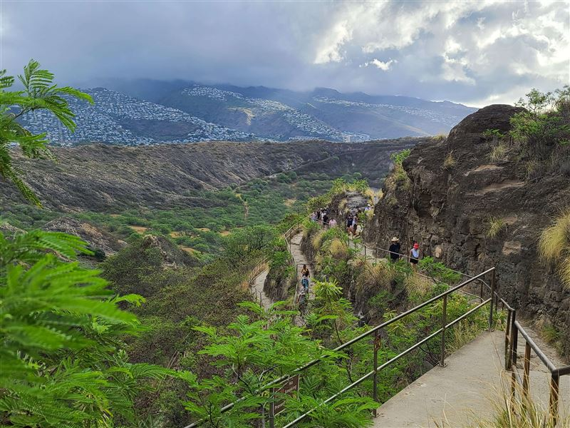
Diamond Head
Diamond Head is a tuff cone formed by eruptions along the Koʻolau Range and later used for coastal defense. A trail from the interior crater climbs switchbacks and stairs to a World War II fire-control station with wide views over Waikīkī and the south shore.
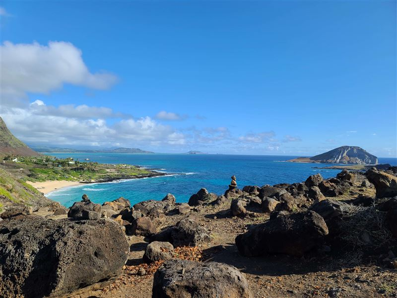
Makapuʻu Lookout
Makapuʻu Point overlooks the windward coast at the southeastern tip of Oʻahu. A paved trail from the parking area rises to a viewpoint above sea cliffs, Makapuʻu Beach, and offshore islets. The site is managed as part of the Kaiwi State Scenic Shoreline.
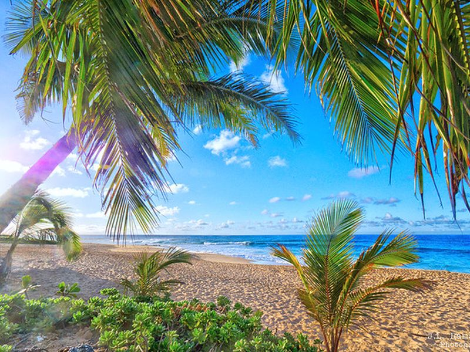
Hanauma Bay Nature Preserve
Hanauma Bay is a flooded volcanic crater on the southeast coast that became a marine life conservation district in 1967. Snorkelers enter through an education center and viewing deck before reaching a sheltered reef with clear water and resident fish populations.
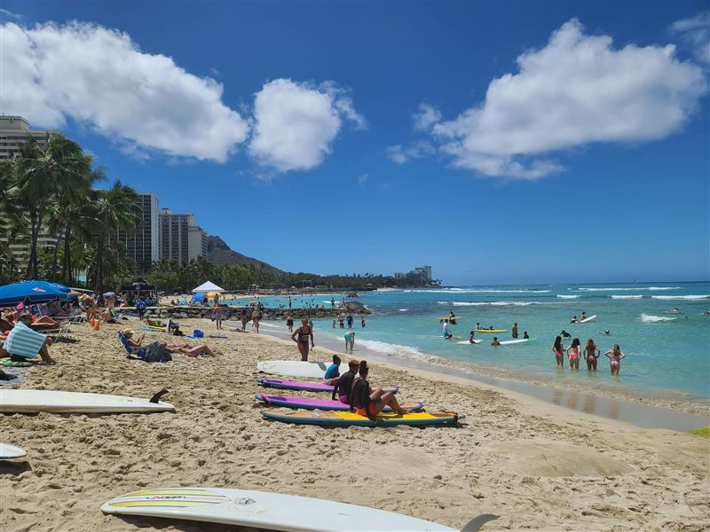
Waikīkī Beach
Waikīkī developed in the 19th and 20th centuries as a resort district on Oʻahu's leeward shore. Its long sand beach, framed by hotels and Diamond Head, became closely associated with Hawaiian tourism and surf culture. Public access runs along Kalākaua Avenue and the adjacent shoreline.
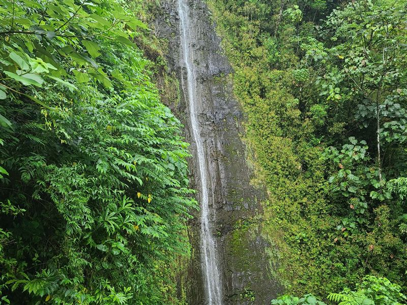
Manoa Falls
Manoa Falls drops about 150 feet at the head of Mānoa Valley on the windward slopes of the Koʻolau Range. A forested trail through bamboo and native vegetation leads from the valley floor to the base of the falls within the Honolulu Watershed Forest Reserve.
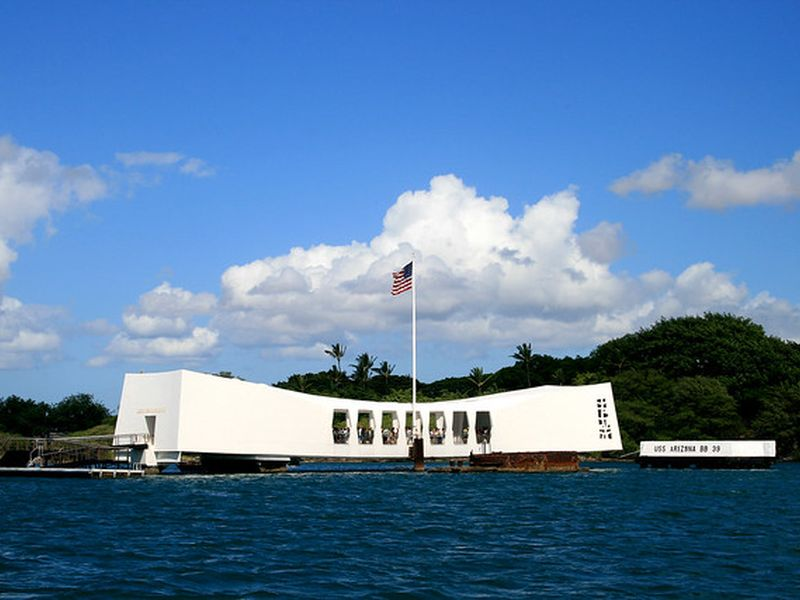
Pearl Harbor National Memorial
Pearl Harbor National Memorial preserves the USS Arizona, USS Oklahoma, and USS Utah memorials above the 1941 attack site. Visitor facilities at the World War II Valor in the Pacific National Monument interpret the harbor's naval history and the events of December 7.
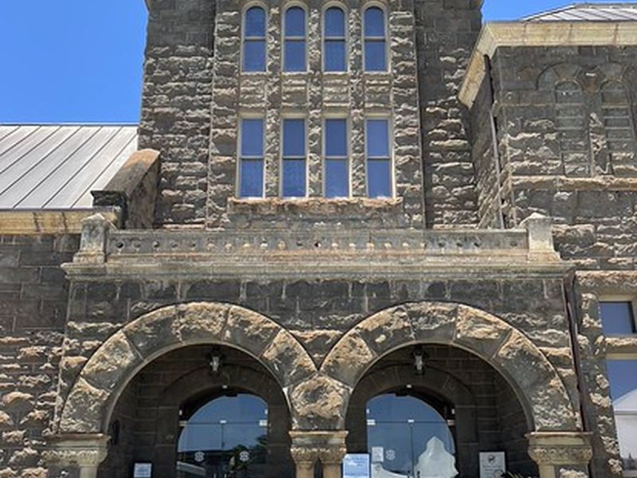
Bishop Museum
The Bernice Pauahi Bishop Museum was founded in 1889 to house Hawaiian royal family collections. Its halls document Polynesian voyaging, Hawaiian monarchy, natural history, and changing exhibitions on Pacific culture. The museum remains a major research institution for Hawaiʻi.
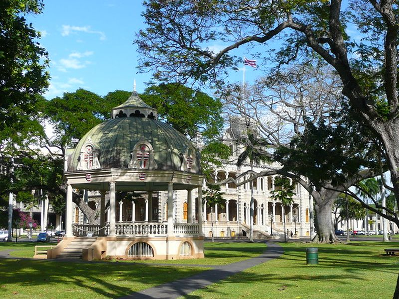
Iolani Palace
ʻIolani Palace was completed in 1882 as the official residence of the Hawaiian monarchy under King Kalākaua. After annexation it served government offices before restoration as a museum of the kingdom period. Guided tours cover state rooms, throne hall, and basement galleries.
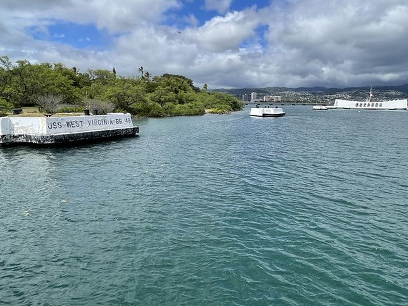
Pearl Harbor Aviation Museum
The Pearl Harbor Aviation Museum occupies hangars on Ford Island within the active harbor. Exhibits include aircraft from World War II and later periods, along with interpretation of Pacific air combat and carrier aviation. Access is by shuttle from the visitor center.
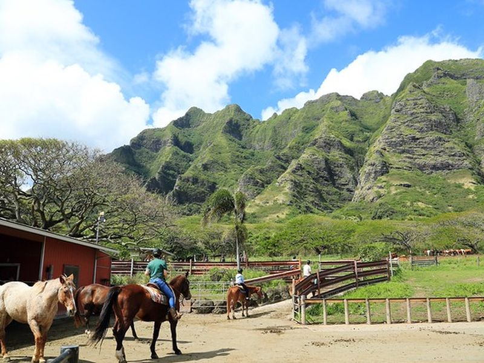
Kualoa Ranch
Kualoa Ranch spans a private nature reserve on the windward coast at Kaʻaʻawa Valley. The property has long supported cattle ranching and later film production on Oʻahu. Guided tours cross pastures, fishponds, and ridges with views of Mokoliʻi islet.
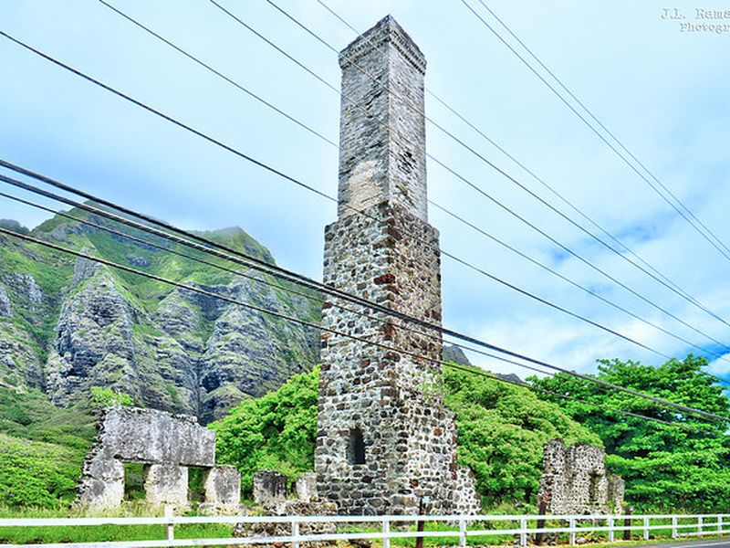
Hoʻomaluhia Botanical Garden
Hoʻomaluhia Botanical Garden was opened by the City and County of Honolulu in 1982 in Kāneʻohe. Its 400 acres collect tropical and subtropical plants from around the world within a valley framed by the Koʻolau cliffs. Walking roads and lakes support casual visits and photography.
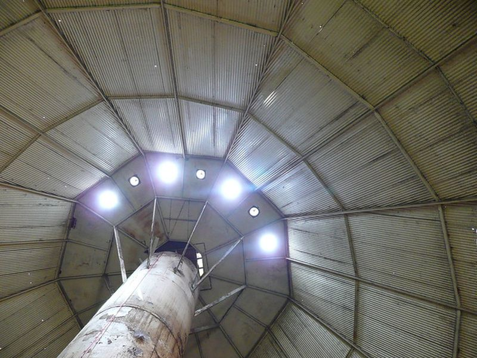
Dole Plantation
Dole Plantation sits on former pineapple land in central Oʻahu near Wahiawā. The site presents plantation history, tropical gardens, and a narrow-gauge train around agricultural displays. It grew from a roadside fruit stand opened by James Dole's company in 1950.
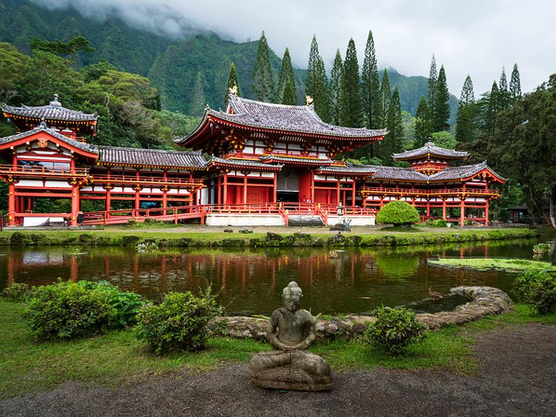
Polynesian Cultural Center
The Polynesian Cultural Center opened in 1963 as a living museum affiliated with Brigham Young University–Hawaii. Village exhibits represent island cultures of Polynesia through architecture, craft demonstrations, and evening performances in Lāʻie on the north shore.